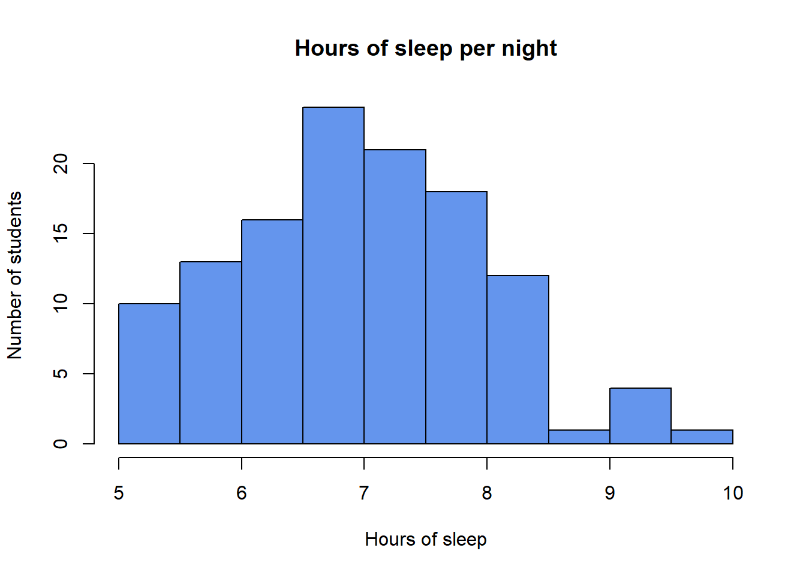
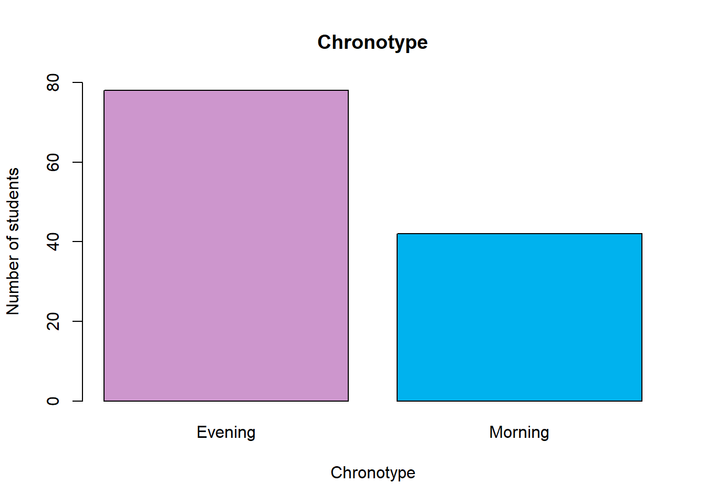
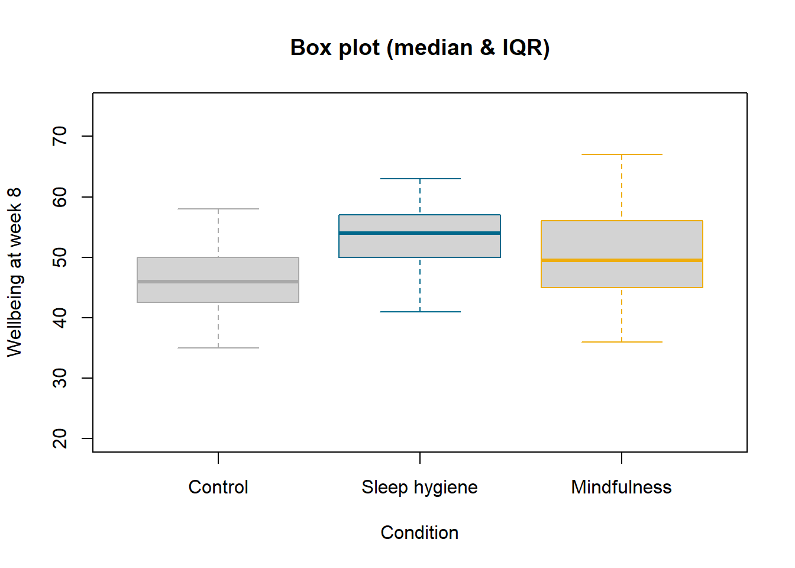
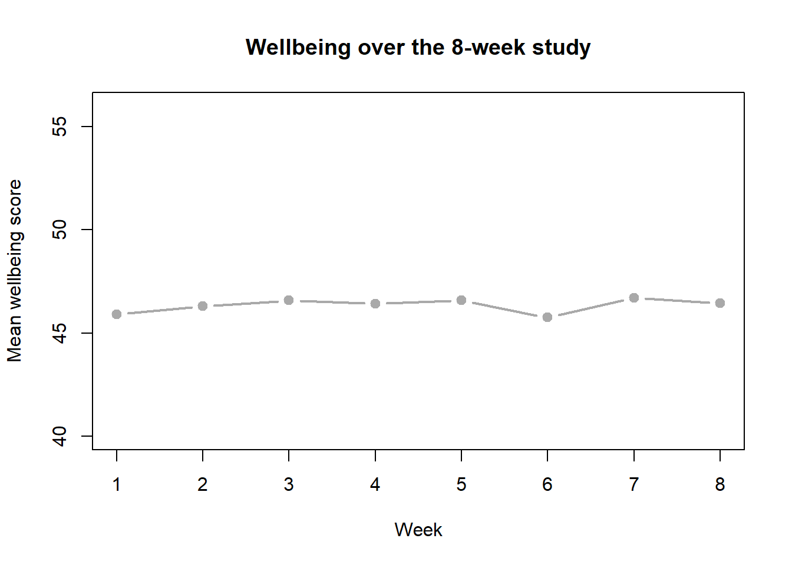
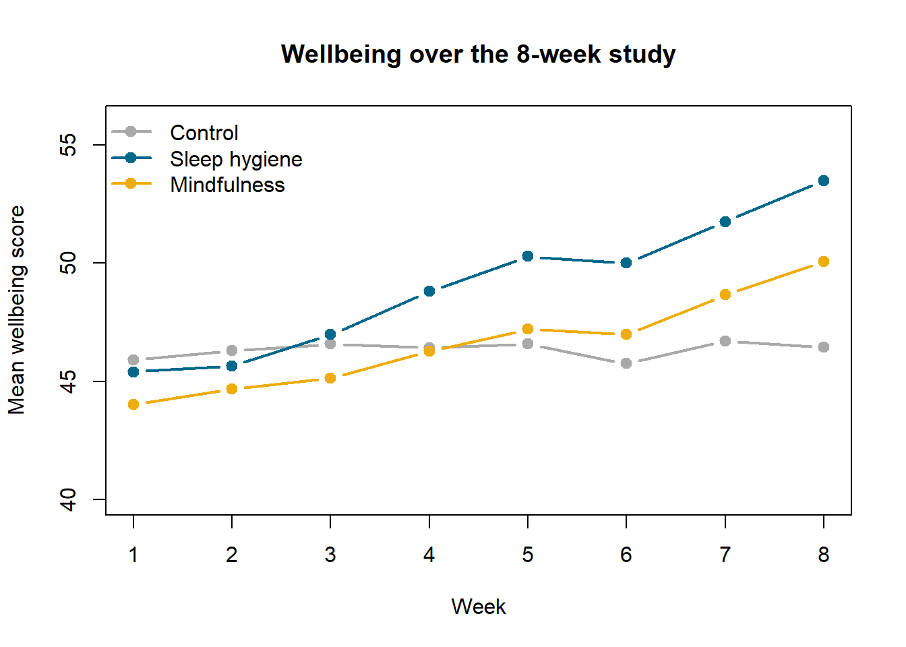

id condition chronotype sleep_hours caffeine memory_score wellbeing_final
1 1 Control Morning 6.9 0 30 49
2 2 Control Evening 7.2 3 36 48
3 3 Control Evening 6.8 7 24 49
4 4 Control Evening 6.7 5 28 37
5 5 Control Evening 5.3 2 30 42
6 6 Control Evening 6.7 10 26 45PS71020_Unit1_Homework
NoteSome general notes about the weekly homeworks
Each week will have an associated homework worksheet in a similar format to this. You should go through the worksheet during your own time to get extra practice. Try to answer the worksheet questions in your own words however. Model answers will be available within the document itself but please try to answer the questions properly before revealing them. A full R script for the analysis will be published VLE page from Fridays after the labs so you can compare your own script. If your question relates specifically to the lecture content or the homework sheets, please contact Peter Holland by email or use the forum on the VLE page.
Homework Learning Outcomes 1 - Importing the lecture datasets into R
2 - Perform a basic examination of the dataset
3 - Perform basic data wrangling
4 - Recreate some of the visualisations
In this homework worksheet the aim is for you to build a new R script that can perform the above tasks. You can use the code patterns from the lab worksheet and other materials as a guide as well as the questions here.
Here is a summary of the study design: 120 students take part in an 8-week study. Randomly assigned to one of three conditions:
a sleep hygiene programme,
a mindfulness app,
a control group.
At the start they log they log their average sleep. Every week complete a short wellbeing questionnaire. At the end they do a memory test.
There are two .csv files which contain this data, sleep_study.csv contains most of the data, and sleep_study_weekly.csv contains just the weekly wellbeing questionnaire results. Both files can be found on the VLE in the ‘Homework Materials’ section for this week.
Before downloading the data and starting to write your script what is a good idea to do first? Hint it helps with organisation and keeping materials for one analysis together in one place.
Create a new R Project with its own folder to work in. This keeps the data ans scripts in the same place to help prevent file location errors.
The first thing we need to do is to load the data. First go to the VLE page and download the two csv files. Now move these to your working directory.
For desktop RStudio this means moving them to the correct location on your computer.
For RStudio Server this means uploading them to the correct location in your area of the server.
What is the name of the function we have been using to read csv files?
read.csv()
In the code used to create this worksheset I have loaded both data sets, I’ve called the data in sleep_study.csv sleep_study and the data in sleep_study_weekly.csv sleep_weekly.
If you choose different names that is absolutely fine but remember that any code examples in this worksheet will not match your variable names.
It is good practice for us to examine the data before we try to do any plots.
What R command would I have used to produce the following output?
head(sleep_study)
The same command produce the following output for the sleep_weekly dataframe:
id condition week_1 week_2 week_3 week_4 week_5 week_6 week_7 week_8
1 1 Control 50 50 49 49 51 46 50 49
2 2 Control 51 47 49 46 49 50 52 48
3 3 Control 46 46 52 51 45 53 47 49
4 4 Control 34 37 39 36 35 34 37 37
5 5 Control 43 39 44 42 39 40 43 42
6 6 Control 46 49 45 47 48 51 45 45What is this format referred to when we have one row per subject?
Wide format data
We can use the following code to rearrange our data into long format, remembering that we need to use the library(tidyr) command to load the tidyr package that gives us access to the useful pivot functions.
library(tidyr)
sleep_weekly <- pivot_longer(sleep_weekly,
cols = week_1:week_8, # the columns to stack
names_to = "week", # old column names go here...
names_prefix = "week_", # ...minus the "week_" part
names_transform = as.integer, # so "3" becomes the number 3
values_to ="wellbeing") # the scores go here
dim(sleep_weekly)[1] 960 4head(sleep_weekly) # 120 students x 8 weeks = 960 rows# A tibble: 6 × 4
id condition week wellbeing
<int> <chr> <int> <int>
1 1 Control 1 50
2 1 Control 2 50
3 1 Control 3 49
4 1 Control 4 49
5 1 Control 5 51
6 1 Control 6 46One important data wrangling step we also need to do is to make sure R knows which of our variables is categorical. What are categorical (nominal or ordinal) known as in R? What are the categorical variables in our data set?
Factors. condition and chronotype
We can use the following code to accomplish this:
# condition is a categorical variable (a factor) and fix the order of the groups
#since we will use this more than once we should create it as a variable
cond_levels <- c("Control", "Sleep hygiene", "Mindfulness")
sleep_study$condition <- factor(sleep_study$condition,
levels = cond_levels) # use our newly
sleep_weekly$condition <- factor(sleep_weekly$condition,
levels = cond_levels)
sleep_study$chronotype <- factor(sleep_study$chronotype)One other thing that can also be good practice is to use the same colours throughout all the plots that use the same data groupings. So for example the control group will always appear gray. We can specify this here using the line of code below. Now if we want to re-use these colours we can simply refer to the variable cond_cols.
# One colour per condition (close to Okabe-Ito colours: safe for colour-blind viewers)
cond_cols <- c("Control" = "darkgray", "Sleep hygiene" = "deepskyblue4", "Mindfulness" = "darkgoldenrod2") You can look for a guide to a sample of these named colours here https://r-graph-gallery.com/42-colors-names.html. However, R contains 657 different named colours, you can print a full list of them to the console by type colors(). If you type the name of a colour in “” marks into the console or a script RStudio will colour that text with that colour as a quick guide for you.
During the Week 1 Lab Worksheet we used the hist() function to plot a histogram of the mydata$Ladder.score variable and also saw how to change the colour of the bars and add axis labels and titles. Try to use similar code to reproduce the figure below and add this to your analysis script.

Do you notice something that is not ideal about the y axis in this figure?
The bars extend beyond the top of the y axis, which is not good practice. This is a frustrating feature of base R plots. In the full answer code for this worksheet I will provide a solution to this.
If we want to plots the counts of a nominal variable we need to know how many fall into each category. Here we can use a function called table() and assign these counts to a variable called chrono_counts that we can use for plotting.
chrono_counts <- table(sleep_study$chronotype)
chrono_counts
Evening Morning
78 42 The barplot() function works very similarly to the hist() function we have just used. Try to look at the help for barplot() and try to reproduce the figure below. Don’t worry about matching the colours exactly, just try to have different colours for the two bars.

The next plot we are going to use is a boxplot. In the Tutorial 5 you can see an example of how to use a formula object to create a boxplot. Here the formula we want to use is wellbeing_final ~ condition. So we can define it like this:
myFormula <- wellbeing_final ~ conditionSee if you can figure out the code needed to create the following plot:

The final plot we are going to create is the line plot of the wellbeing scores for each week but split by group. We first need to calculate the means for each week and each group, this can be done using the following code:
# Calculate the mean wellbeing for each condition in each week
weekly_means <- aggregate(wellbeing ~ condition + week, data = sleep_weekly, FUN = mean)Please don’t worry if this looks complex, we will cover how to use this function in future weeks. However, if we look at the output we can see it has done what we would like:
head(weekly_means) condition week wellbeing
1 Control 1 45.900
2 Sleep hygiene 1 45.400
3 Mindfulness 1 44.025
4 Control 2 46.300
5 Sleep hygiene 2 45.650
6 Mindfulness 2 44.675We now want to get the means for each condition separately. In Tutorial 5 you can see an example of how we can select certain rows of a dataframe, for example only those rows belonging to a certain condition. Here we do this three times to get our three separate sets of weekly means:
# Split the means into three separate tables, one per condition
control_means <- weekly_means[weekly_means$condition == "Control", ]
hygiene_means <- weekly_means[weekly_means$condition == "Sleep hygiene", ]
mindfulness_means <- weekly_means[weekly_means$condition == "Mindfulness", ]Now the trick to plotting all three on one graph is to create an empty plot and then draw them one by one. Below is the code to create the plot and draw the first line:
# Draw an empty plot with the right axes
plot(weekly_means$week, weekly_means$wellbeing,
type = "n",
xlim = c(1, 8),
ylim = c(40, 56),
main = "Wellbeing over the 8-week study",
xlab = "Week",
ylab = "Mean wellbeing score")
# Add one line per condition
lines(control_means$week, control_means$wellbeing,
type = "b", pch = 19, lwd = 2, col = cond_cols["Control"])
See if you can write the code to draw the other two lines following the same pattern as lines(control_means$week, control_means$wellbeing, type = "b", pch = 19, lwd = 2, col = cond_cols["Control"]).
Finally, we can add a legend to the plot by adding the line legend("topleft", legend = cond_levels, col = cond_cols, lwd = 2, pch = 19, bty = "n")
The final plot you create should look like this:
